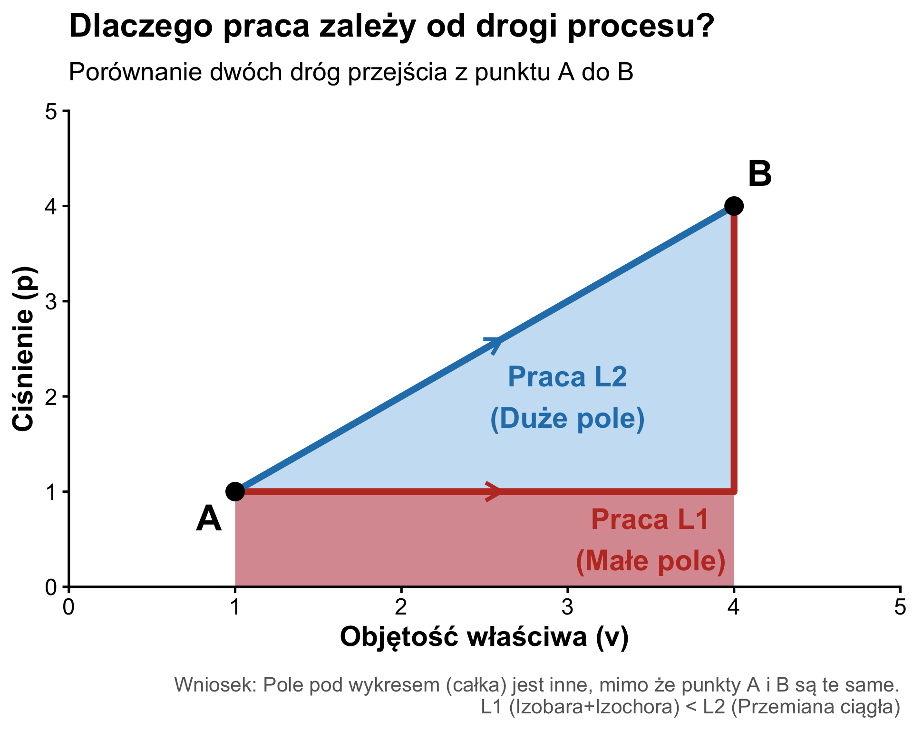

W2: I Zasada Termodynamiki
Bilans Energii w Układach Zamkniętych
Wydział Inżynierii Środowiska i Inżynierii Mechanicznej


Wstęp do I Zasady Termodynamiki
Zasada Zachowania Energii
Pierwsza Zasada Termodynamiki to sformułowanie zasady zachowania energii dla zjawisk termicznych.
- Postuluje ona równoważność pracy (\(L\)) i ciepła (\(Q\)) jako sposobów przekazywania energii.
- Dla układu izolowanego zmiana energii wewnętrznej wynosi zero: \(dU = 0\).
- Niemożliwe jest zbudowanie perpetuum mobile pierwszego rodzaju (maszyny wykonującej pracę bez zasilania energią z zewnątrz).

Ciepło (\(Q\))
Definicja i Konwencja Znaków
Ciepło to energia przekazywana przez granicę układu na skutek różnicy temperatur.
- Nie jest funkcją stanu (zależy od drogi procesu).
- \(đQ > 0\): układ pobiera ciepło z otoczenia.
- \(đQ < 0\): układ oddaje ciepło do otoczenia.

Źródło: J. Szargut, \(Termodynamika \ techniczna\) PWN, (2000).
I Zasada Termodynamiki (postać różniczkowa): \[ dU = đQ - đL \]
I Zasada dla Układów Zamkniętych
Bilans Energii
Dla procesów kwazistatycznych w układach zamkniętych (bez wymiany masy), przy braku pracy nieobjętościowej:
\[ dU = đQ - p \cdot dV \]
Postać całkowa:
\[ \Delta U = Q - L \]
Gdzie:
- \(\Delta U = U_2 - U_1 = m \cdot c_v(T_2 - T_1)\).
- \(L = \int_{V_1}^{V_2} p(V) dV\).


Źródło: J. Szargut, \(Termodynamika \ techniczna\) PWN, (2000).